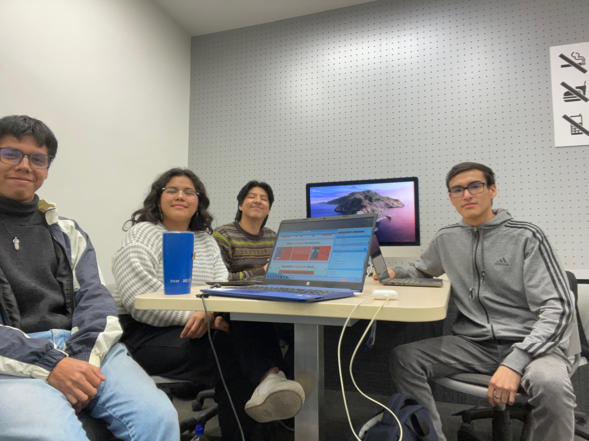

Conoce al equipo detrás de JobHub
Rol
Conecta con mentores, colegas y oportunidades de empleo
WorkConnect es una start-up conformada por estudiantes de la Universidad Peruana de Ciencias Aplicadas (UPC) que surgió bajo la iniciativa de brindar una mejor alternativa a usuarios en búsqueda de empleos en el mundo laboral actual, creando una conexión más cercana no solo entre empleado y empleador, sino también viceversa. De esta forma nace el producto “JobHub”, servicio que busca brindar un espacio tanto para profesionales y empleadores, para mejorar relaciones profesionales en los distintos campos laborales. JobHub busca también proveer un entorno accesible y amigable al usuario para poder brindar comodidad y confianza al segmento de clientes que busca el empleo.
 María López, Diseñadora Gráfica
María López, Diseñadora Gráfica Carlos Pérez, Desarrollador Web
Carlos Pérez, Desarrollador Web  Ana García, Recursos Humanos
Ana García, Recursos Humanos
La empresa XYZ, una startup en rápido crecimiento, utilizó JobHub para optimizar su proceso de contratación. Gracias a la filtración avanzada de postulantes y las entrevistas por la página, XYZ redujo el tiempo de contratación en un 50%, permitiendo a la empresa incorporar talento clave rápidamente y mantenerse competitiva en el mercado.
Juan, un ingeniero de software con experiencia, utilizó JobHub para encontrar una nueva oportunidad laboral después de mudarse a una nueva ciudad. La sugerencia personalizada de empleos y las postulaciones rápidas y dinámicas le permitieron encontrar y obtener una oferta de empleo en menos de un mes, adaptándose fácilmente a su nueva vida profesional y personal.
Un grupo de profesionales del sector tecnológico decidió utilizar JobHub para expandir su red de contactos. Utilizando la función de conexión de contactos, lograron establecer relaciones significativas con otros profesionales y empresas, facilitando colaboraciones y abriendo nuevas oportunidades de negocios.